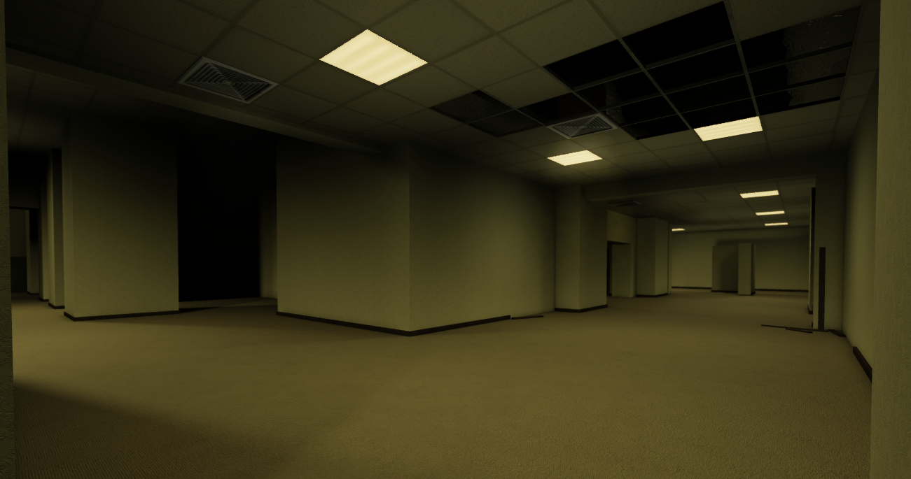

Description
Level 0, also known as "The Infinite Hallways", is the starting level of the Backrooms. It consists yellow-tinted hallways featuring stained yellow wallpaper, damp carpet, and the fluorescent lighting. This is where new survivors start first.
Resources
- Food: Food bars the main food source on the level.
- Weapons: Spears and machete may be located in scattered areas.
- Light Sources: Flashlights and batteries can be found.
Threats
- Entities: Bacterium life-forms roam the hallways.
- ASYNC Operatives: While usually passive, ASYNC staff may become hostile if provoked.
Exits
Additional Notes
ASYNC documentation suggests Level 0 contains between 9-10 vertical floors. Exploration of vertical shafts or hidden access panels may lead to undocumented regions.
